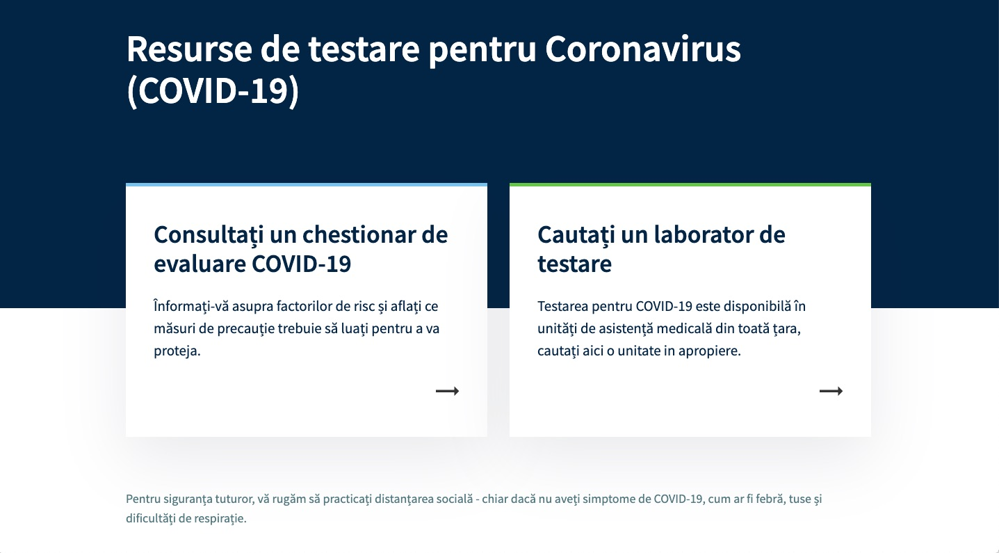
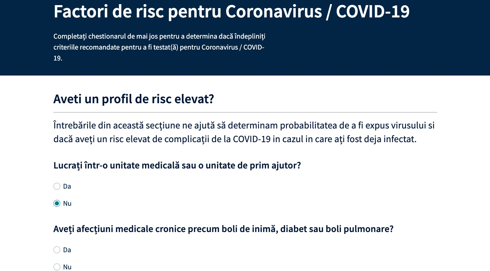
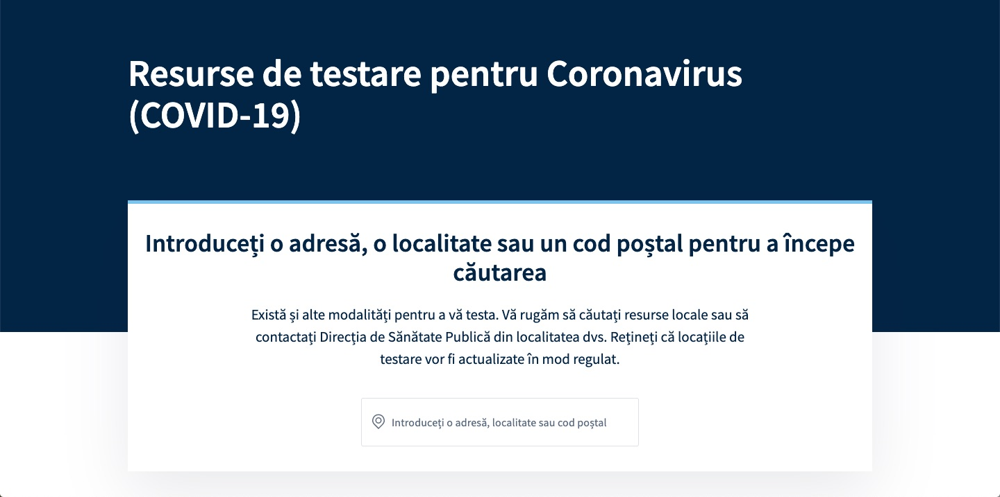

Ca raspuns la pandemia de coronavirus, Governul Romaniei a adoptat intr-un prim pas masuri stricte de separare sociala, izolare la domiciliu si carantinare. Aceste masuri au fost adoptate precoce, inainte ca alte tari (din vestul Europei si nu numai) sa adopte masuri similare, si au facut ca pandemia sa ramana controlabila si sa fie evite situatii extreme (ca cele din Italia si Spania) — chiar si in conditiile in care sistemul medical din Romania nu e cel mai performant.
Din pacate, masurile adoptate au avut ca urmare o reducere brutala a activitatii economice, si o crestere pe masura a somajului tehnic si somajului. Ca atare, e absolut vital ca economia si activitatea economica sa fie re-startata cu celeritate. In acest sens, Presedentia si Guvernul Romaniei au hotarat ca Starea de Urgenta sa nu fie prelungita dupa 15 mai, si sa fie implementate, gradual, masuri de relaxare si de iesire din stopajul economic curent.
In diverse declaratii facute de reprezentanti ai Guvernului (Ministrul Sanatatii, etc) se pune in vedere populatiei si mediului de afaceri ca orice masura de relaxare poate – si va fi – revocata daca va conduce la o crestere a numarului de noi infectii.
Ce se ignora in acest discurs e ca orice re-implementare a unor masuri de control al pandemiei va avea efecte majore asupra moralului populatie si asupra mediului de afaceri: daca stopajul economic a fost si este extrem de dureros si nociv, majoritatea firmelor vor avea puterea financiara pentru a restarta activitatea; dar e putin probabil ca multe firme vor putea sa opereze in regim stop-and-go, si din pacate, orice nou re-start va limita numarul firmelor si afacerilor care vor supravietuii.
Ca atare, e vital ca odata ce s-au pornit masurile de relaxare, sa nu se regreseze!
Planurile de relaxare/relansare din diverse tari/regiuni sunt cat se poate de similare, spre exemplu, in California, se prevede o relaxare graduala in 4 pasi:
Preconditia pentru inceperea relaxarii este ca numarul de cazuri noi de infectie sa se aplatizeze/scada, dupa care se intrevad un set de masuri care sa tina rata de infectie sub control (R-0 < 1):
- Distantarea fizica si obligatia de a purta masca
- Depistarea si izolarea rapida a persoanelor simptomatice
- Testarea populatiei, cu precadere si prioritate a persoanelor care prin natura ocupatiei au contact cu multe alte persoane (personal medical, angajati magazine, ...)
- Urmarirea contactilor persoanelor infectate
- Mentinerea integritatii si performantei sistemului medical, in principal prin evitarea contaminarii personalului medical si spitalelor.
Distantarea Fizica
Tari precum Coreea de Sud, Taiwan, dar si Cehia, care au implementat cu celeritate masuri de separare fizica si de obligativitate a purtarii mastii in public (atat in spatii inchise cat si deschise) au observat un declin semnificativ a ratei de infectie (R-0). Obligativitatea purtarii mastii in public s-a dovedit a fi un pilon semnificativ in managementul infectiei in conditii de non-lock-down.
Din pacate, din observatiile culese in cele cateva zile care au trecut de la legiferarea obligiativitatii purtarii mastii (in spatiile inchise), aceasta masura nu va avea efectul scontat si se va dovedi in final inefectiva:
- Majoritatea populatiei nu poarta masca in spatiile deschise
- Masca e purtata eronat, de exemplu prin ne-acoperirea nasului
- Angajati din magazine isi dau jos masca imediat ce intrerup contactul direct cu clientul
Cercetari recente afirma ca o cale importanta de transmitere a bolii (poate chiar calea principala) este prin micro-stropi generati de bolnavi asimptomatici in timpul vorbirii:
In plus, cozile, imbulzeala si calcatul pe picioare
par sa fie din nou la ordinea zilei.
Ca atare si ca urmare, masurile de "distantare fizica" vor avea un efect limitat, si din pacate nu se vor constitui intr-o unealta principala in lupta impotriva infectiei — fara o initiativa majora de PR/media si de educatie din partea Guvernului, Min. Sanatatii, etc.
Vezi si www.poarta-masca.ro.
Depistare Rapida
Managementul COVID-19 e complicat de trei factori caracteristici acestei infectii (ref: COVID-19: The CIDRAP Viewpoint):
- perioada lunga de incubare:
...the average incubation period for COVID-19 is 5 days (range, 2 to 14 days). The longer incubation period allows the virus to move silently in different populations before being detected
- procentaj ridicat a cazurilor asimptomatice:
Although information is still being collected to definitively define the asymptomatic fraction for COVID-19, public health officials have stated that 25% of all cases may be asymptomatic
- gradul de contagiozitate este maxim in jurul perioadei aparitiei primelor simptome:
Another consideration is the timeframe of presymptomatic viral shedding for people who fall ill. One recent study found that the SARS-CoV-2 viral load was highest at the time of symptom onset
De vreme ce detectarea si izolarea cazurilor asimptomatice (25% din cazuri) se dovedeste extrem de dificila, si
este sursa principala a incidentelor cazurilor de super-spreaders
(ref:
'Super Spreader' Events Increase COVID-19 Cases), devine cu atat mai importanta detectarea si izolarea
celorlalte 75% din cazuri – cele simptomatice; iar aceasta detectare/izolare trebuie realizata cu maxima
rapiditate, data fiind evolutia contagiozitatii cu un maxim in jurul aparitiei primelor simptome.
Un grup de oameni de stiinta din SUA avertizeaza ca masurile de control care preconizeaza doar testarea persoanelor simptomatice impreuna cu teste in diverse locatii (metrou, intrari in institutii publice, etc) ale temperaturii populatiei vor fi insuficiente (ref: Scientist to Stop COVID-19):
Once current social-distancing measures are lifted, the current policy of testing only symptomatic individuals cannot adequately curtail COVID-19 transmission. For example, a study of COVID transmission in Wuhan, China occurring between February 1 and March 12—when Chinese health officials were carrying out house-to-house temperature checks on the general population—found that even with such intrusive measures 86% of COVID cases were not identified, likely because the majority of infected persons had mild symptoms.
Propunerea acestui grup este ca populatia sa (1) poarte echipamente de protectie (masti); (2) sa fie testata periodic (via teste PCR) si (3) sa certifice zilnic, inainte de a parasi locuinta, ca nu prezinta simptome asociate cu Covid-19:
All employees and students must certify (via smartphone app), before leaving home, that they are not experiencing enough of the following COVID-19 symptoms to exceed a calculated risk, weighted by symptom frequency, of being infected with SARS-CoV-2 (incidence frequency and standard error are shown, with data sources):
a. Fever (0.64±0.030)2–4
b. Sinus pain (0.50±0.18)4
c. Cough (0.46±0.032) 2–4
d. Reduced or altered sense of smell or taste (0.44±0.17)
e. Expectoration (0.32±0.036)3
f. Stuffy nose (0.25±0.15)4
g. Chills (0.18±.044)2
h. Fatigue (0.18±0.025)2,3
i. Sore throat (0.13±0.039)2
j. Headache (0.13±0.037)2,4
k. Difficulty breathing (0.11±0.034)2,4
l. Joint or muscle pain(0.099±0.023)3,4
m. Diarrhea (0.056±0.015)2–4
n. Vomiting (0.026±0.018)2
Aceasta certificare se poate implementa fie printr-o aplicatie mobila (smartphone app), sau printr-o declaratie pe propria raspundere, asa cum a fost mandatata in cazul parasirii locuintei in perioada situatiei de urgenta. Verificarea acestei declaratii va trebui facuta in orice locatie in care persoana va petrece mai mult timp in prezenta altor persoane (transport in comun, birou, sala de clasa, magazine, restaurante, ...).
Aplicatia noastra COVID-19 implementeaza suportul pentru o asemenea certificare, si va genera un document PDF ori, in mod alternativ, un cod QR.
Asa cum autoritatile (DSP) au mandatat obligativitatea termoscanarii la intrarea in magazine sau la sediul firmelor cu peste 50 de angajati (ref: Firmele care nu măsoară temperatura riscă amendă), asa vor trebui/putea mandata verificarea unei asemenea certificari zilnice.
Testare
Asa cum am subliniat mai inainte, exista temerea ca o politica care prevede doar testare persoanelor simptomatice va avea efecte limitate in controlul pandemiei si va contribui la o resurgenta a cazurilor noi de infectare.
In consecinta, multe state/tari prevad si pregatesc suportul logistic pentru testarea ampla si repetata a populatiei. Spre exemplu, in multe locatii in SUA, orice persoana isi poate programa un test folosind aplicatii online:
Persoanele care au contacte repetate in populatie (angajati magazine, resturante, ...) sunt incurajati sa se testeze periodic, indiferent de simptomatologie:
Suita noastra de aplicatii incorporeaza o aplicatie web care permite identificarea unei locatii de testare si programarea online a testarii (evident, toate aceste locatii vor trebui adaugate in baza de date a aplicatiei in consultanta si coordonare cu autoritatile abilitate).
Urmarirea Contactelor
Parte integranta in manualul combaterii pandemiei este urmarirea si depistarea tuturor ccontactatelor pe care o persoana infectata le-a avut in peroada de incubatie (14 zile), si testarea acestor persoane; si in cazul in care unul din aceste contacte se dovedeste pozitiv, aplicarea aceleasi proceduri in cazul contactului.
Evident, aceasta activitate este anevoioasa si poate conduce la suprasolicitarea DSP-urilor, ceea ce va da nastere unui feedback loop negativ: cu cat raman in urma DSP-urile in ce priveste urmarirea/depistarea rapida a contactelor, cu atat mai multe persoane vor fi contactate/infectate de persoane infectate cu SARS-COV-2.
Chiar si in conditiile in care urmarirea se face in mod eficient si rapid, e posibil ca unele contacte sa fie omise din simplul motiv ca o persoana infectata nu a stiut sau nu isi aduce aminte.
Diverse state/tari au adoptat, sau sunt in curs de adoptie, seturi de masuri pentru a face fata exploziei actiunilor de urmarire a contactelor, care explozie este intrevazuta si prezisa o data cu ralaxarea si iesirea din starea de lock-down: de exemplu, statul New York angajeaza si antreneaza un numar de pana in 17000 de "traceri" (ref: New York's Nation-Leading Program Expected to Have 6,400 to 17,000 Tracers)
In paralel cu angajarea/antrenarea acestori "traceri" se intrevad si implementari a diverse solutii IT pentru a facilita depistarea contactelor. Unele tari (de exemplu Israel) au fortat operatorii de telefonie mobila in a preda informatiile de geo-locatie a persoanelor infectate, si informatii despre oricare alte persoane aflate in locatiile respective. Fara doar si poate, solutii de acest tip ridica intrebari in privinta protectiilor civile si a datelor cu caracter personal.
Printre diversele solutii propuse este si cea de "contact tracking" bazata in principal pe suportul Bluetooth din telefoanele mobile. Idea e ca o mica aplicatie instalata voluntar pe telefonul mobil va comunica cu orice alt telefon pe o raza restranse (2 metri), si va inregistra, anonimizat, toate aceste "contacte". Ulerior, daca se dovedeste ca una din persoane a fost infectata, datele anonimizate aflate in telefonul persoanei infectate pot fi incarcate intr-o baza de date adminstrata de autoritatile statului (DSP, SSI, ...) si pot fi interogate de alte telefoane din aceasta retea ad-hoc/virtuala; orice match va fi raportat doar utilizatorului, si ramane la latitudinea utilizatorului sa contacteze centrele de testare pentu a determina daca a fost sau nu infectat.
Aplicatia Covid-19 App din suita noastra de Solutii IT implementeaza un asemenea protocol.
Suita de aplicatii pe care am dezvoltat-o incearca sa aduca solutii pentru problemele cu care se confrunta adminstratorii pandemiei COVID-19 la nivel national:
- depistarea contactilor
- evaluarea persoanelor si determinarea riscului de infectie
- indrumarea persoanelor catre unul centrele de testare, si programarea online a testarii
- monitorizarea locatiei persoanelor aflate in stare de izolare sau carantina
- demarcarea circuitelor spitalicesti folosind tehncologii Bluetooth si dirijarea pacientilor in spitale via o aplicatie de mapare 3D astfel incat sa nu fie incalcate circuitele desemnate in vederea evitarii infectarii pacientilor si personalului medical
TODO: inlocuieste textul din aplicatie cu documentatie tehnica
Perioada de incubatie a noului coronavirus este de pana la 14 zile. Asta inseamna ca o persoana infectata poate sa fie purtatoare a acestui virus ptr 2 saptamana inainte ca sa dezvolte simptome specifice. Din pacate, in perioada in care persoana infectata e asimptomatica, ea poate sa infecteze pe altii - de exemplu, pe tine. Tu, la randul tau, la fel vei putea sa infectezi pe altii, inclusiv pe cei apropiati, inainte de a afla ca ai fost infectat. De aceea, e vital sa aflii cat mai repede posibil daca ai fost infectat.
Daca de fiecare data cand te afli in apropierea unei alte persoane (in magazin, in metrou, la birou), ai putea sa "tii minte" acest contact, si in plus daca ai putea afla (zilnic) lista cu noile imbolnaviri, ai putea sa compari toate contactele tale si sa determini daca exista vreun risc de imbolnavire. Evident nu poti sa te plimbi pe strada si sa ceri tututor persoanelor pe langa care treci buletinul! Din fericire, putem rezolva problema cu ajutorul tehnologiei: folosind tehnologia Bluetooth, telefonul tau poate sa constate daca se afla "linga" alt telefon si sa inregistreze acest fapt. Mai tarziu, se poate lega la o baza de date si sa determine daca vreunul dintre contactele tale a fost infectat.
Te vei gandi - "desigur, o idee buna, dar cum pot sa permit oricarei persoane necunoscute care se intampla sa treaca pe langa mine sa afle date si informatii despre mine". Vestea buna este ca solutia pe care o propunem e voluntara, complet anonima, toate datele sunt stocate doar pe telefonul tau, si nici o data personala nu e shareuita cu terte persoane.
Aplicatia va genera la intervale regulate (din 10 in 10 minute) un numar unic, complet aleator (random), si nu are legatura cu tine, numarul tau de telefon, adresa ta email, profilul tau de facebook, etc - e doar un numar. In mod similar, si aplicatiile celorlalti participanti in program vor genera asemenenea numere aleatoare. Cand doi participanti se afla in contact fizic (distanta de mai putin de 5m pentru mai mult de 2 minute), acesti identificatori vor fi interschimbati. De vreme ce peste alte 10 minute, numarul generat de aplicatia ta va fi diferit, nimeni nu va putea sa faca vreo legatura intre tine si acest numar. In plus, aceste numere vor fi stocate doar pe telefoanele mobile - nu exista nici o baza de date centrala in care sa fie salvate. In plus, toate numerele mai vechi de 14 zile vor fi sterse in mod automat.
Daca unul din contactele tale a fost testat pozitiv, va putea sa decida daca vrea sa puna la dispozitia DSU numerele stocate pe telefonul sau. Daca decide sa NU puna la dispozitia DSU aceste informatii atunci nu vei putea fi notificat in mod automat. In caz contrar, DSU va incarca intr-o baza de date aceste numere. Telefonul tau va interoga in mod periodic aceasta baza de date si va compara numerele stocate pe telefonul tau cu numerele stocate. In caz ca aplicatia va gasi un "match" te va notifica. Ce e important de inteles e ca DSU nu stie si nu poate stii cui corespund numerele incarcate in baza lor de date. Toate comparatiile si matching-ul se fac EXCLUSIV de aplicatia care ruleaza local pe telefonul tau, si doar tu vei stii daca aplicatia a gasit un asemenea match.
Home
Cum sa prevenim infectarea
Evalueaza-te

Tel Verde
Certificare
Contact Tracking
Informatii Utile
Home: linkuri spre chestionarul de evaluare respectiv motorul de cautare:

Chestionar de evaluare: arbore de decizie, bazat pe selectiile utilizatorului:

Motor de cautare laboratoare de testare Covid-19, informatii orar de functionare,
conditii de testare, programare online:
